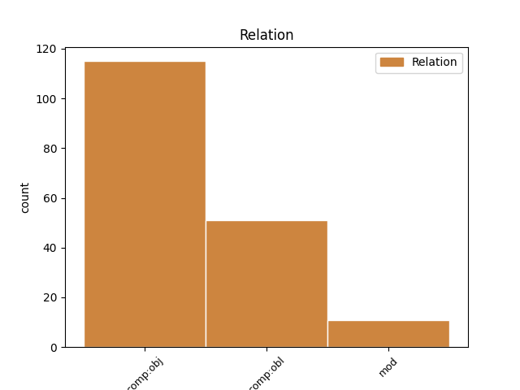
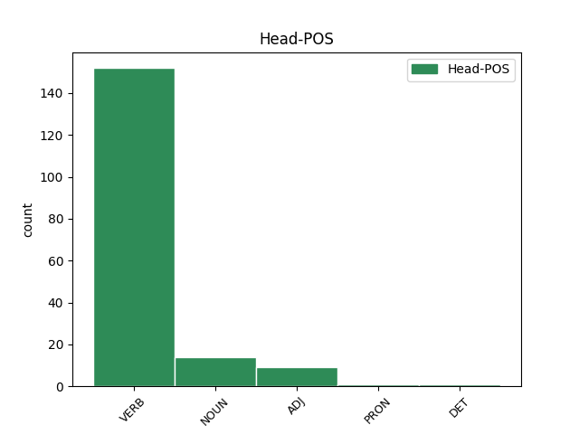
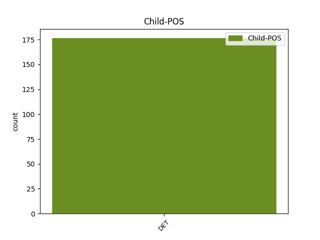

Distribution of features within this leaf



Agreement Rules sorted by frequency.
- When the dependent token is the direct object complements(comp:obj) of the head token, and the dependent token is DET.
1 Był _ _ _ _ 0 _ _ _
2 to _ _ _ _ 0 _ _ _
3 stary _ _ _ _ 0 _ _ _
4 model _ _ _ _ 0 _ _ _
5 forda _ _ _ _ 0 _ _ _
6 , _ _ _ _ 0 _ _ _
7 długi _ _ _ _ 0 _ _ _
8 i _ _ _ _ 0 _ _ _
9 szeroki _ _ _ _ 0 _ _ _
10 , _ _ _ _ 0 _ _ _
11 w _ _ _ _ 0 _ _ _
12 ciemnym _ _ _ _ 0 _ _ _
13 kolorze _ _ _ _ 0 _ _ _
14 , _ _ _ _ 0 _ _ _
15 którego który DET adj:sg:gen:m3:pos Animacy=Inan|Case=Gen|Gender=Masc|Number=Sing|PronType=Rel 18 comp:obj _ SpaceAfter=No
16 ; _ _ _ _ 0 _ _ _
17 nie _ _ _ _ 0 _ _ _
18 rozpoznał rozpoznać VERB praet:sg:m1:perf Animacy=Hum|Aspect=Perf|Gender=Masc|Mood=Ind|Number=Sing|Tense=Past|VerbForm=Fin|Voice=Act 0 _ _ _
19 em _ _ _ _ 0 _ _ _
20 w _ _ _ _ 0 _ _ _
21 mdłym _ _ _ _ 0 _ _ _
22 świetle _ _ _ _ 0 _ _ _
23 księżyca _ _ _ _ 0 _ _ _
24 . _ _ _ _ 0 _ _ _
1 Państwo _ _ _ _ 0 _ _ _
2 członkowskie _ _ _ _ 0 _ _ _
3 może _ _ _ _ 0 _ _ _
4 zastosować _ _ _ _ 0 _ _ _
5 instytucję _ _ _ _ 0 _ _ _
6 przedawnienia _ _ _ _ 0 _ _ _
7 w _ _ _ _ 0 _ _ _
8 stosunku _ _ _ _ 0 _ _ _
9 do _ _ _ _ 0 _ _ _
10 roszczeń _ _ _ _ 0 _ _ _
11 o _ _ _ _ 0 _ _ _
12 wypłatę _ _ _ _ 0 _ _ _
13 specjalnych _ _ _ _ 0 _ _ _
14 dodatków _ _ _ _ 0 _ _ _
15 za _ _ _ _ 0 _ _ _
16 wysługę _ _ _ _ 0 _ _ _
17 lat _ _ _ _ 0 _ _ _
18 , _ _ _ _ 0 _ _ _
19 których który DET adj:pl:gen:m3:pos Animacy=Inan|Case=Gen|Gender=Masc|Number=Plur|PronType=Rel 23 comp:obl _ _
20 pracownik _ _ _ _ 0 _ _ _
21 migrujący _ _ _ _ 0 _ _ _
22 był _ _ _ _ 0 _ _ _
23 pozbawiony pozbawić ADJ ppas:sg:nom:m1:perf:aff Animacy=Hum|Aspect=Perf|Case=Nom|Gender=Masc|Number=Sing|Polarity=Pos|VerbForm=Part|Voice=Pass 0 _ _ _
24 z _ _ _ _ 0 _ _ _
25 uwagi _ _ _ _ 0 _ _ _
26 na _ _ _ _ 0 _ _ _
27 zastosowanie _ _ _ _ 0 _ _ _
28 niezgodnego _ _ _ _ 0 _ _ _
29 z _ _ _ _ 0 _ _ _
30 prawem _ _ _ _ 0 _ _ _
31 wspólnotowym _ _ _ _ 0 _ _ _
32 przepisu _ _ _ _ 0 _ _ _
33 prawa _ _ _ _ 0 _ _ _
34 krajowego _ _ _ _ 0 _ _ _
1 Porównywanie _ _ _ _ 0 _ _ _
2 informacji _ _ _ _ 0 _ _ _
3 należy _ _ _ _ 0 _ _ _
4 zakończyć _ _ _ _ 0 _ _ _
5 do _ _ _ _ 0 _ _ _
6 dnia _ _ _ _ 0 _ _ _
7 31 _ _ _ _ 0 _ _ _
8 października _ _ _ _ 0 _ _ _
9 każdego każdy DET adj:sg:gen:m3:pos Animacy=Inan|Case=Gen|Gender=Masc|Number=Sing|PronType=Tot 10 mod _ _
10 roku rok NOUN subst:sg:gen:m3 Animacy=Inan|Case=Gen|Gender=Masc|Number=Sing 0 _ _ _
11 . _ _ _ _ 0 _ _ _
Disagree Examples:
1 Obok _ _ _ _ 0 _ _ _
2 leżał _ _ _ _ 0 _ _ _
3 rower _ _ _ _ 0 _ _ _
4 , _ _ _ _ 0 _ _ _
5 którym który DET adj:sg:inst:m3:pos Animacy=Inan|Case=Ins|Gender=Masc|Number=Sing|PronType=Rel 6 comp:obl _ _
6 jechała jechać VERB praet:sg:f:imperf Aspect=Imp|Gender=Fem|Mood=Ind|Number=Sing|Tense=Past|VerbForm=Fin|Voice=Act 0 _ _ _
7 kobieta _ _ _ _ 0 _ _ _
8 . _ _ _ _ 0 _ _ _
1 U _ _ _ _ 0 _ _ _
2 mnie _ _ _ _ 0 _ _ _
3 miała mieć VERB praet:sg:f:imperf Aspect=Imp|Gender=Fem|Mood=Ind|Number=Sing|Tense=Past|VerbForm=Fin|Voice=Act 0 _ _ _
4 by _ _ _ _ 0 _ _ _
5 ś _ _ _ _ 0 _ _ _
6 więcej więcej DET num:pl:acc:m3:rec Animacy=Inan|Case=Acc|Gender=Masc|Number=Plur|NumType=Card|PronType=Ind 3 comp:obl _ SpaceAfter=No
7 . _ _ _ _ 0 _ _ _
1 Rządy _ _ _ _ 0 _ _ _
2 Leszka _ _ _ _ 0 _ _ _
3 Millera _ _ _ _ 0 _ _ _
4 dużo dużo DET num:pl:acc:n:rec:ncol Case=Acc|Gender=Neut|Number=Plur|NumType=Card|PronType=Ind 5 comp:obl _ _
5 dały dać VERB praet:pl:m3:perf Animacy=Inan|Aspect=Perf|Gender=Masc|Mood=Ind|Number=Plur|Tense=Past|VerbForm=Fin|Voice=Act 0 _ _ _
6 wielu _ _ _ _ 0 _ _ _
7 ludziom _ _ _ _ 0 _ _ _
8 . _ _ _ _ 0 _ _ _
1 Dyrektor _ _ _ _ 0 _ _ _
2 wymienia _ _ _ _ 0 _ _ _
3 imprezy _ _ _ _ 0 _ _ _
4 , _ _ _ _ 0 _ _ _
5 które który DET adj:pl:acc:f:pos Case=Acc|Gender=Fem|Number=Plur|PronType=Rel 6 comp:obj _ _
6 zorganizował zorganizować VERB praet:sg:m1:perf Animacy=Hum|Aspect=Perf|Gender=Masc|Mood=Ind|Number=Sing|Tense=Past|VerbForm=Fin|Voice=Act 0 _ _ _
7 . _ _ _ _ 0 _ _ _
1 Dużo dużo DET num:pl:acc:f:rec Case=Acc|Gender=Fem|Number=Plur|NumType=Card|PronType=Ind 2 comp:obj _ _
2 zrobił zrobić VERB praet:sg:m1:perf Animacy=Hum|Aspect=Perf|Gender=Masc|Mood=Ind|Number=Sing|Tense=Past|VerbForm=Fin|Voice=Act 0 _ _ _
3 przez _ _ _ _ 0 _ _ _
4 ten _ _ _ _ 0 _ _ _
5 rok _ _ _ _ 0 _ _ _
6 . _ _ _ _ 0 _ _ _